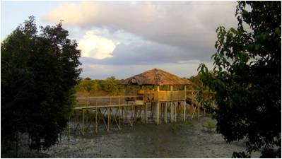

এই ইকো সাইটটি শ্যামনগর উপজেলার মুন্সিগঞ্জ ইউনিয়নের যতিন্দনগর গ্রামে অবস্তিত। এটি নয়নাভিরাম একটি ইকো-সাইট এবং এটি সম্ভবত সুন্দরবনের সবচেয়ে কাছের এবং এখান থেকে খুব অল্প দুরত্বে সুন্দরবন দেখা যায়।
এই ইকো-কটেজে দেশি এবং বিদেশি পর্যটকদের জন্য থাকা-খাওয়া এবং সল্প খরচে সুন্দরবন ঘুরে দেখার সুযোগ। শ্যামনগর শহর থেকে হরিনগর হয়ে এই সাইটে যেতে মটর সাইকেল যোগে সময় লাগতে পারে ৪০-৪৫ মিনিট, এটি ২০-২১ কি.মি. দুরত্বে অবস্তিত।